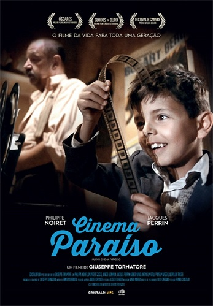

Pequena introdução sobre Ana Amélia
Professora EBTT do Instituto Federal de Educação, Ciência e Tecnologia do Ceará (IFCE). Possui graduação em História pela Universidade Estadual do Ceará - UECE (2004), mestrado em História Social pela Universidade Federal do Ceará - UFC (2008) e doutorado em História Social pela Universidade Federal do Ceará - UFC. Tem experiência na área de História, com ênfase em História Social, atuando principalmente nos seguintes temas: políticas culturais, cultura popular, patrimônio cultural, memória e museus. No últimos anos vem se dedicando às pesquisas na área de Ensino de História, integrando o Grupo de Estudos e Pesquisa em Ensino de História - GEPEH da Universidade Federal do Ceará. Integra o corpo docente do Mestrado Profissional em Ensino de História da Universidade Federal do Ceará, atuando na linha de pesquisa Saberes Históricos em diferentes Espaços de Memória. Atualmente vem desenvolvendo pesquisas na área de Ensino de História e tecnologias digitais. É um dos membros da comissão organizadora da Olimpíada de Ciências Humanas do Estado do Ceará, realizada desde 2019 pelo Instituto Federal do Ceará.
Entrevista com Ana Amélia Rodrigues de Oliveira
1 - Qual o seu apelido?
Mel.
2 - Qual sua data de nascimento?
07/06/1980.
3 - Qual o local do seu nascimento?
Fortaleza - CE.
4 - Para quais paises você já viajou?
Peru, Argentina, Colômbia, Uruguai, Chile, Portugal, Espanha, França, Holanda e Bélgica.
5 - Quais idiomas você fala ou compreende além do português?
Francês.
6 - Quais são os seus livros favoritos?
A insustentável leveza do ser e Torto Arado.
7 - Qual o seu filme favorito?
Cinema Paradiso.
8 - O que normalmente gosta de fazer no seu tempo livre?
Ler, ver filmes e séries, sair pra comer.
9 - Qual é a sua história de vida?
Sou filha de uma família de classe média, com três filhos, sendo eu a filha do meio. Meus pais moram no município de Itapipoca, num sítio. Tenho dois sobrinhos lindos, uma menina de 3 anos e um menino de 10. Sou casada há quase 15 anos com Natália. Sou formada em história pela UECE, com mestrado e doutorado em história social pela UFC. Professora do IFCE desde 2018.
10 - O que mais dá sentido para a sua vida?
Sentir que contribuo com a nossa sociedade através do meu trabalho como professora.